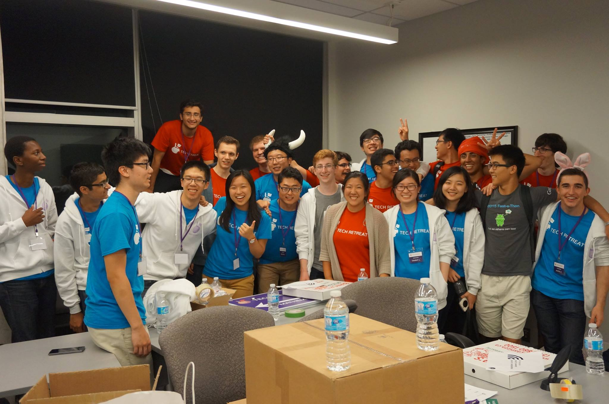
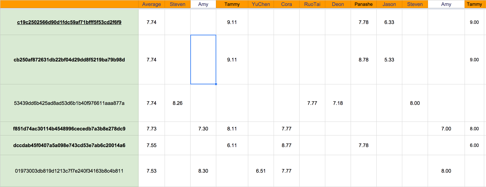

Transparency Report 2015
If you attended Tech Retreat in August, we hope you had an amazing time. We started organizing this event in May (technically April, but then we had exams), and throughout that process, one of our core values has always been, and will continue to be, transparency. That’s why we’re publishing this - our transparency report. We’ll go over everything that covered the event!
The Team
The Tech Retreat organizing team is comprised of 19 students, most of which are from the University of Waterloo and also in their first year of studies. We also have one organizer from SFU!We also had a contingent of 15 volunteers and 32 mentors, without whom the event would not be possible!

(Some of) the team!
Finance
Time to crunch the numbers.Outreach
As this was the first year Tech Retreat was running, we directly reached out to students in high school and surveyed their interest in a hackathon and learnathon solely for secondary school students.In total, we contacted 22 high schools from the GTA and Waterloo region to target those who can easily reach The University of Waterloo either by car or by public transportation. This was done so by contacting each high school’s computer science and robotics clubs’ members. Furthermore, we relied on social media, such as Twitter and Facebook, as a means of spreading this event to more prospective participants.
Acceptances
Tech Retreat received 470 valid applications (from 504 total applications) over the course of 2 months. We say valid because some students applied more than once, and there were applicants with fake names and incomplete application form. This was a lot more than we expected and we had to resort to an admission process in order to admit 160 learners and hackers.
In order to make things as fair as possible, the organizing team decided on a admission process that had each application looked over by at least 3 organizers, then were given a score from 0 to 10. The criteria was different from hackathon and learnathon, we looked for experience while taking account of passion from the answers for the hackathon, and only took account of passion for learning for the learnathon component. None of the other information submitted during the application process was looked at, in fact, they were deliberately obscured from the organizers during the admission process.

Yum... Data.
After each applicant was given 3 scores by the assigned organizers, we normalized every score a given organizer gave in order to avoid bias with some organizers assigning a higher or lower grade than others.
Then, we decided as a group on the cutoff score, which was chosen in order to admit a portion of hackers and learners for the first round. Some hackers and learners were asked to switch streams that we thought were a better fit for their skills and ability. Then we sent out the acceptance letters, and waited. Then, based on the number of people who replied, we sent out a few more acceptances for round 2, 3 and so on.
Due to a mistake in the way the hackathon admission information was handled, the first 3 rounds of admissions relied on data that had incorrect scores. We caught on to this mistake later on, corrected the data, and sent out invitations for the hackers who were wrongly penalized in round 4. No one was retroactively rejected from this incident.
Then, we decided as a group on the cutoff score, which was chosen in order to admit a portion of hackers and learners for the first round. Some hackers and learners were asked to switch streams that we thought were a better fit for their skills and ability. Then we sent out the acceptance letters, and waited. Then, based on the number of people who replied, we sent out a few more acceptances for round 2, 3 and so on.
Due to a mistake in the way the hackathon admission information was handled, the first 3 rounds of admissions relied on data that had incorrect scores. We caught on to this mistake later on, corrected the data, and sent out invitations for the hackers who were wrongly penalized in round 4. No one was retroactively rejected from this incident.
Admissions at a glance
4
Hackathon
ROUNDS
3
Learnathon
ROUNDS
470
students
APPLIED
114
hackers
ACCEPTED
52
learners
ACCEPTED
Who are the students?
We received applications from students of all walks across Ontario, but most of them came from the GTA area. Notably, 57 applicants came from Brampton, 105 from Mississauga, 95 from Toronto, 32 from Waterloo, 30 from Richmond Hill, 20 from Windsor and 18 from Kitchener.As for gender distribution, our initial pool of applicants was 19.64% female. After the admission process, 12% those admitted into the hackathon were female and 19% of those in the learnathon were female. This is a key area we will be working on to improve for the next iteration of Tech Retreat.
Also, it might be interesting to look at the last completed grade of the applicants. Graph time!
What can we say?
The most common Tech Retreat student would be a male, in grade 11 or 12, and coming from Mississauga.
Experience and Interest
According to the applications, here are what students are most most likely to have experience in these technologies (by searching for keywords in the text that was included in the application):
Hacker Relations
We sent a lot of emails out to you. In total… we sent out a total of 56 Mailchimp campaigns (we sent different emails to different streams), which totalled 3579 emails. We've also received over 60 questions on Facebook about the event, and many more via email.
A total of 239 people (organizers, volunteers, mentors, sponsors, hackers) were on Slack. In total, we sent 23.7K messages - 10K (42%) in channels, 5.9K (25%) in groups, and 7.8K (33%) in private messages. As a group, we also stored 165 files, totalling 200 MB.
During the day of the event, we had a surprisingly high retention rate as the overwhelming majority of the admitted students showed up! 89% or 148 out of 166 students arrived the morning of the 15 August. You guys rock! We also had a contingent of 15 volunteers and 32 mentors, without whom the event would not be possible!
We used DevPost for judging and showcasing Hackathon projects - in total, we received 27 submissions. For the software learnathon, we had 17 tanks that were submitted into the final showdown!
During the day of the event, we had a surprisingly high retention rate as the overwhelming majority of the admitted students showed up! 89% or 148 out of 166 students arrived the morning of the 15 August. You guys rock! We also had a contingent of 15 volunteers and 32 mentors, without whom the event would not be possible!
We used DevPost for judging and showcasing Hackathon projects - in total, we received 27 submissions. For the software learnathon, we had 17 tanks that were submitted into the final showdown!
Logistics
Aha. This is a fun one. I’ll start with food - who doesn’t love food? :DOur wonderful sponsor Enflick covered lunch for us, so I don’t have the stats for that. For dinner, we bought 80 pizzas for a total of 800 slices. We also bought 600 bags of chips and 840 cans of pop/juice.
We want to hear what you want for food at 2016’s Tech Retreat - let us know! :)
We also ordered 250 lanyards and badges, 200 stickers, and 250 T-Shirts (psst. if anyone has an extra red shirt lying around… send it Deon’s way - he wants one), and a bunch of plates/napkins/forks for lunch.
In terms of visuals, we bought a photo backdrop (hopefully you got a shot!), a retractable banner to guide you to us, and lawn signs to direct you to Mathematics 3. We used 8 different spaces for Tech Retreat, so we also printed 66 signs to direct you to the right place.
Open Source
All code and teaching documents developed for Tech Retreat are fully open source and they can be found on our GitHub organization.Among them, TechTanks is a game we’ve developed to teach Ruby programing to a novice coders by allowing them to create the AI for a tank, and then to fight each other. A lot of the code for this project was forked off RTanque, which itself is a open source clone of the popular RoboCode game. TechTanks is still online and we will be keeping it online indefinitely for your enjoyment!

Social Media
Comments from participants
Time
Time? Before Tech Retreat started, we sent out an email to those of you who subscribed to our mailing list asking if you wanted a one-day or two-day program (stay in residence included overnight).We received a total of 75 responses for this survey.
Do you want, and are you able to attend, a two day Tech Retreat? Yes - 68 (90.7%) No - 7 (9.3%)
If you said "Yes" to the question above, would you like to stay in residence, or stay at home overnight? In Residence - 63 (92.6%) At Home - 5 (7.4%)
From this, we can tell that you were very enthusiastic about having a two-day event, but unfortunately we weren’t able to run a two-day Tech Retreat this year because of logistical and finance constraints.
As mentioned earlier, we sent out a feedback survey - one of those questions was:
Were you able to finish your project up to the point you would've liked? We got 47 replies to this question. Yes - 21 (44.7%) No - 26 (55.3%)
The data is clear above - a slight majority of you would have liked more time to work on your projects. We definitely feel where you’re coming from and will make a push to make Tech Retreat a two-day event in 2016. Hopefully all of that info satisfied your curiosity about Tech Retreat! Till next year, everyone! We have a lot of cool things planned for you all.
Hacker love, The Tech Retreat Team
Ruo Tai Sun Tammy Liu Daniel Rampelt Yu Chen Hou Jason Zukewich Deon Hua Panashe Mahachi Bilal Akhtar Cora Lam Andrew Gapic Kingsong Chen Dave Pagurek Steven Kong Wendy Lu Amy Li Simon Fan Adam Klen Joey Pereira Robert Gawdzik … and all the fantastic mentors and volunteers